표준 트랜잭션은 SAP이 권한 체크를 내장하고 있으나, CBO 프로그램은 개발자가 직접 체크를 구현해야 한다. 프로그램별로 구현하면 방식이 통일되지 않고 누락이 발생하므로 공통 모듈로 표준화한다.
| 구분 | 오브젝트 (본 문서 예시 채번) | 비고 |
|---|---|---|
| 공통 클래스 | ZCMCL_AUTH_CHECK | 정적 메서드 CHECK |
| DDIC | ZCMS0070(구조) / ZCMS0070T(테이블 타입) | 체크 요청 목록 |
| 메시지 | ZCMM01 080/081/082 (+기존 057·033 재사용) | EN 원본 + KO 번역 |
| 참조 데모 | YCM_AUTH_DEMO5(단일값) / YCM_AUTH_DEMO6(범위값) | 개발자 배포용 |
| 테스트 자산 | 테스트 계정 + 베이스 롤 + 권한 부여 롤 | 08장 |
CBO 프로그램이 체크 요청을 구성해 공통 클래스에 전달하면, 클래스가 사용자 권한 버퍼(로그인 시 로드된 Role 값)와 대조해 판정을 반환한다. 허용 범위는 PFCG Role이 결정한다.
모든 구현의 바탕은 ABAP 문장 하나다:
AUTHORITY-CHECK OBJECT 'F_BKPF_BUK'
ID 'BUKRS' FIELD '1000'.로그인한 사용자의 권한 버퍼에 해당 오브젝트의 값 조합이 있는지 확인한다.
sy-subrc가 0이면 허용, 그 외는 거부다.
| 구성요소 | 역할 |
|---|---|
| 권한 오브젝트 (SU21) | 검사할 필드(BUKRS, ACTVT 등)를 정의한다. 값은 갖지 않는다 |
| Role (PFCG) | 오브젝트에 허용 값을 채워 사용자에게 배정한다 |
| 권한 버퍼 | 배정된 롤의 값이 로그인 시점에 메모리로 로드된 상태다 |
실무상 유의할 점은 다음 세 가지다.
CC1*과 같은 패턴을 부여할 수 있으며, 체크 시점에 매치된다.| 구분 | 결정 대상 | 담당 |
|---|---|---|
| 실행 통제 | 프로그램(T-code) 실행 가능 여부 | PFCG S_TCODE. 본 모듈 범위 밖이다 |
| 값 조달 | 체크할 값의 출처 | 화면 입력 |
| 기준 결정 | 검사에 사용할 오브젝트와 필드 | CBO 프로그램이 코드에 명시한다 |
| 허용 범위 | 통과와 거부의 판정 기준 | PFCG Role |
| # | 원칙 |
|---|---|
| 1 | 실행 통제는 PFCG의 T-code 부여(S_TCODE)로 처리한다 |
| 2 | 조직 권한은 표준 오브젝트를 Role에 직접 부여한다 |
| 3 | 체크 대상(오브젝트, 필드, 값)은 프로그램이 결정해 전달한다 |
| 4 | AND로 판정하고 실패 항목을 전량 반환한다(BAPIRET2와 상세 목록) |
| 5 | ACTVT는 검사하지 않고 필드 값 일치만 비교한다 |
| 6 | 공통 모듈은 전역 클래스의 정적 메서드로 구현한다 |
| 7 | 거부 시 중단(MESSAGE E)은 호출 프로그램이 수행한다 |
| 8 | 텍스트는 EN을 원본으로 하고 KO 번역을 등록한다 |
체크 요청 한 건은 "어떤 오브젝트의 어떤 필드를 어떤 값으로 검사할지" 세 항목의 묶음이다. 이를 딕셔너리 구조로 정의해 두면 호출 프로그램과 공통 클래스가 같은 타입으로 데이터를 주고받을 수 있고, 프로그램마다 임의의 구조를 선언하는 일이 없다. 컴포넌트는 표준 Data Element를 참조하므로 AUTHORITY-CHECK에 전달하는 값의 타입과 길이가 어긋나지 않는다.
[CM] CBO Authorization Check Request
/ KO [CM] CBO 권한체크 요청| Component | Type | 의미 |
|---|---|---|
| XUOBJECT | XUOBJECT | 권한 오브젝트 |
| XUFIELD | XUFIELD | 권한 필드 |
| VALUE | XUVAL | 체크할 값 |
화면 캡처의 시스템 정보와 계정, 조직 값은 가려두었다.
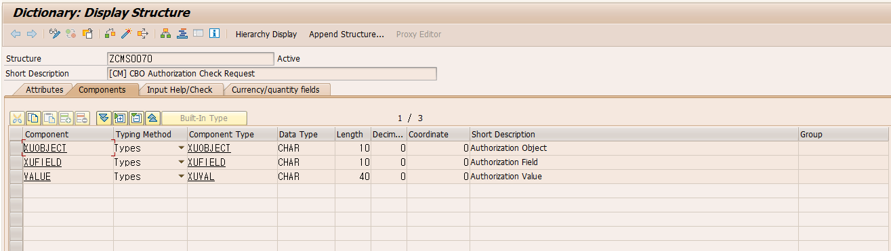
체크 요청은 1건일 수도 있고 여러 건일 수도 있으므로 내부 테이블로 전달한다. 클래스 메서드의 파라미터에는 프로그램 로컬 타입을 지정할 수 없고 딕셔너리 타입이 필요하기 때문에 테이블 타입을 별도로 만든다. 실패 목록을 반환하는 ET_FAILED도 같은 구조이므로 이 타입을 함께 사용한다.
Table Type, Line Type = ZCMS0070, Standard Table.
EN [CM] CBO Authorization Check Request List / KO [CM] CBO 권한체크 요청 목록.
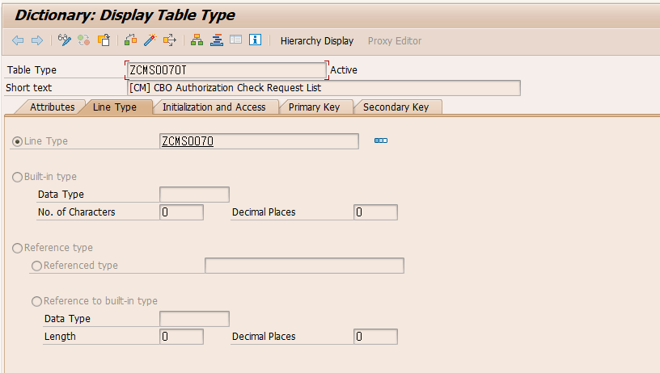
| No. | EN (원본) | KO (번역) | 용도 |
|---|---|---|---|
| 080 | No authorization for organizational unit &1 | 조직 단위 &1에 대한 권한이 없습니다 | 실패 1건 |
| 081 | No authorization for organizational unit &1 and &2 more | 조직 단위 &1 외 &2건에 대한 권한이 없습니다 | 실패 복수 |
| 082 | No authorized data found | 권한이 있는 데이터가 없습니다 | 필터링형 전량 제거 |
필수 입력(057)과 조회 결과 없음(033)은 프로젝트의 기존 메시지를 재사용한다. EN 로그온 상태에서 원본을 입력한 뒤 Goto → Translation에서 KO를 등록한다.
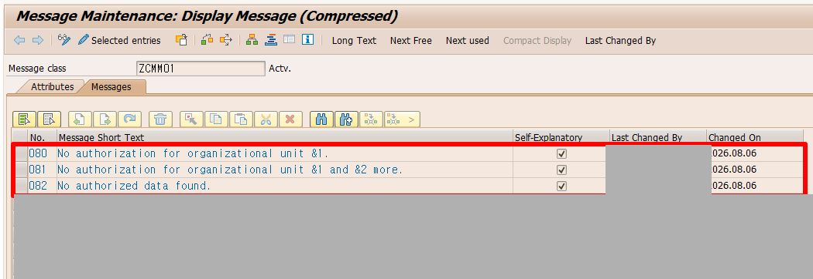
Class / Public / Final. Description EN [CM] CBO Authorization Check Common Module
/ KO [CM] CBO 권한체크 공통모듈.
| Method | Level | Visibility |
|---|---|---|
| CHECK | Static Method | Public |
| Parameter | 구분 | Type | Pass Value | Description |
|---|---|---|---|---|
| IT_CHECK | Importing | ZCMS0070T | ☐ | 체크 요청 목록(오브젝트+필드+값) |
| ES_RETURN | Exporting | BAPIRET2 | ☑ | 결과(TYPE=S/E, MESSAGE=완성 문구) |
| ET_FAILED | Exporting | ZCMS0070T | ☑ | 실패 목록 전량. 필요시만 수신한다 |
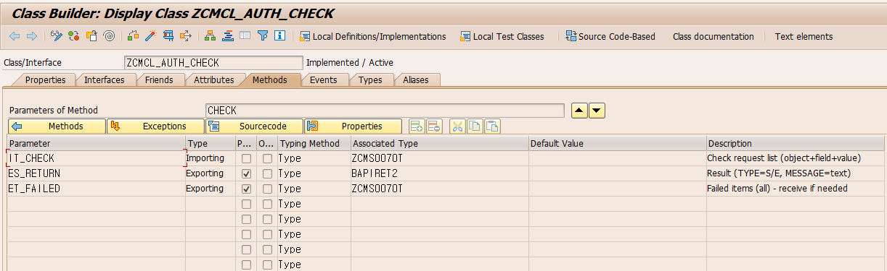
CLEAR: es_return, et_failed.
" 전달된 전 행을 끝까지 체크, 실패는 모아서 전량 리턴
LOOP AT it_check INTO DATA(ls_check).
" 오브젝트/필드/값 누락 행은 실패로 계산 (fail-closed)
IF ls_check-xuobject IS INITIAL
OR ls_check-xufield IS INITIAL
OR ls_check-value IS INITIAL.
APPEND ls_check TO et_failed.
CONTINUE.
ENDIF.
" 필드 값만 비교 - ACTVT 등 미지정 필드는 검사되지 않음
AUTHORITY-CHECK OBJECT ls_check-xuobject
ID ls_check-xufield FIELD ls_check-value.
IF sy-subrc <> 0.
APPEND ls_check TO et_failed.
ENDIF.
ENDLOOP.
DATA(lv_cnt) = lines( et_failed ).
IF lv_cnt = 0.
es_return-type = 'S'.
RETURN.
ENDIF.
" 실패: 상태 E + 표준 메시지 조립 (단건 080 / 복수 081)
" MESSAGE ... INTO는 화면 출력 없이 로그온 언어의 텍스트로 조립됨
es_return-type = 'E'.
es_return-id = 'ZCMM01'.
DATA(ls_first) = et_failed[ 1 ].
DATA(lv_v1) = CONV symsgv( |{ ls_first-xufield } { ls_first-value }| ).
IF lv_cnt = 1.
es_return-number = '080'.
es_return-message_v1 = lv_v1.
MESSAGE ID 'ZCMM01' TYPE 'E' NUMBER '080'
WITH lv_v1 INTO es_return-message.
ELSE.
es_return-number = '081'.
DATA(lv_rest) = lv_cnt - 1.
es_return-message_v1 = lv_v1.
es_return-message_v2 = lv_rest.
MESSAGE ID 'ZCMM01' TYPE 'E' NUMBER '081'
WITH lv_v1 lv_rest INTO es_return-message.
ENDIF.lv_cnt - 1을
변수에 담아 전달한다.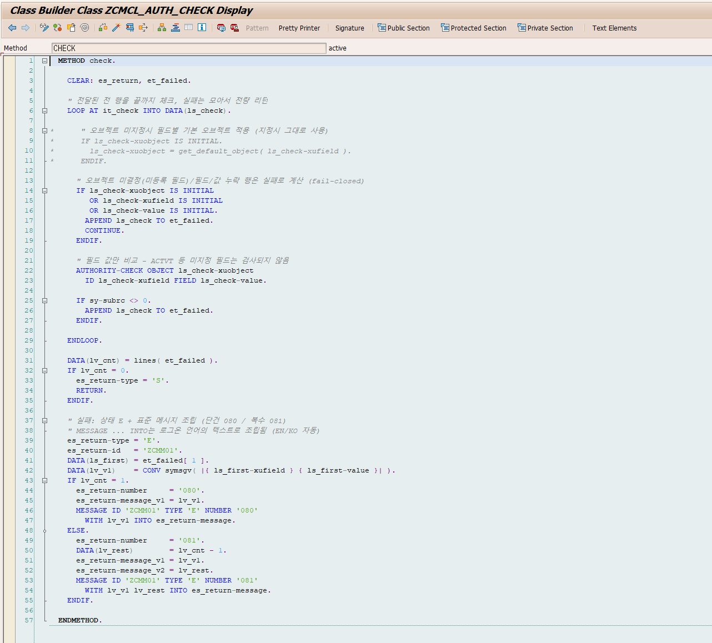
실 CBO에 적용할 표준 형태다. Main + _TOP + _SCR + _F01 인클루드 구조를 사용한다. 오브젝트 조합은 업무 문맥에 따른 예시다. 회사코드는 F_BKPF_BUK(회계전표), 플랜트는 M_MATE_WRK(자재마스터), 코스트센터와 관리영역은 K_CSKS를 사용한다.
인클루드 세 개를 읽어들이고, 체크 요청 구성부터 결과 표시까지 서브루틴을 순서대로 호출한다.
*&--------------------------------------------------------------------*
*& Module : CM
*& Program ID : YCM_AUTH_DEMO5
*& Title : CBO Authorization Check - Reference Program
*& Author : (작성자)
*& Create Date : (작성일)
*&--------------------------------------------------------------------*
*& MODIFICATION LOG
*&--------------------------------------------------------------------*
*& No. Date. Author. Description.
*&--------------------------------------------------------------------*
*& 001 (일자) (ID) Initial Coding
*&--------------------------------------------------------------------*
REPORT ycm_auth_demo5.
INCLUDE ycm_auth_demo5_top.
INCLUDE ycm_auth_demo5_scr.
INCLUDE ycm_auth_demo5_f01.
START-OF-SELECTION.
PERFORM build_check.
PERFORM check_authority.
PERFORM display_result.체크 요청과 결과를 담을 전역 변수를 선언한다. 요청과 실패 목록은 공통 클래스 파라미터와 같은 테이블 타입을 쓰고, 결과는 BAPIRET2로 받는다.
*&---------------------------------------------------------------------*
*& Include YCM_AUTH_DEMO5_TOP - 전역 선언
*&---------------------------------------------------------------------*
DATA: gt_check TYPE zcms0070t,
gt_failed TYPE zcms0070t,
gs_return TYPE bapiret2.조직 값을 입력받는 파라미터를 선언한다. 회사코드는 OBLIGATORY로 화면에서 강제하고, AT SELECTION-SCREEN에서 한 번 더 검증한다.
*&---------------------------------------------------------------------*
*& Include YCM_AUTH_DEMO5_SCR - 선택화면
*&---------------------------------------------------------------------*
PARAMETERS: p_bukrs TYPE bukrs OBLIGATORY,
p_werks TYPE werks_d,
p_kostl TYPE kostl.
AT SELECTION-SCREEN.
PERFORM check_required.필수값 검증, 체크 요청 구성, 공통 클래스 호출, 결과 표시를 서브루틴으로 나눈다. 실 CBO에서는 display_result 대신 결과가 E일 때 MESSAGE E로 중단한다.
*&---------------------------------------------------------------------*
*& Include YCM_AUTH_DEMO5_F01 - 서브루틴
*&---------------------------------------------------------------------*
FORM check_required.
" 화면 검증 + SUBMIT 우회 방어 (AT SELECTION-SCREEN은 SUBMIT에서도 실행됨)
IF p_bukrs IS INITIAL.
MESSAGE e057(zcmm01) WITH TEXT-f01.
ENDIF.
ENDFORM.
FORM build_check.
" 이 프로그램이 체크할 오브젝트+필드+값을 직접 구성 (입력된 축만 체크)
gt_check = VALUE #(
( xuobject = 'F_BKPF_BUK' xufield = 'BUKRS' value = CONV #( p_bukrs ) )
( xuobject = 'M_MATE_WRK' xufield = 'WERKS' value = CONV #( p_werks ) )
( xuobject = 'K_CSKS' xufield = 'KOSTL' value = CONV #( p_kostl ) ) ).
DELETE gt_check WHERE value IS INITIAL.
" 코스트센터 입력시 관리영역(KOKRS)도 함께 체크 - 같은 오브젝트, 행 2개
IF p_kostl IS NOT INITIAL.
gt_check = VALUE #( BASE gt_check
( xuobject = 'K_CSKS' xufield = 'KOKRS' value = '1000' ) ).
ENDIF.
ENDFORM.
FORM check_authority.
" 공통 클래스 호출 - 상세 목록(et_failed)은 표시용, 차단형은 수신 생략 가능
zcmcl_auth_check=>check(
EXPORTING it_check = gt_check
IMPORTING es_return = gs_return
et_failed = gt_failed ).
ENDFORM.
FORM display_result.
IF gs_return-type = 'S'.
WRITE: / TEXT-t01, '-', sy-uname.
LOOP AT gt_check INTO DATA(ls_check).
WRITE: / ' ', TEXT-t03, ls_check-xuobject, ls_check-xufield,
ls_check-value.
ENDLOOP.
RETURN.
ENDIF.
" 실패: 상세는 et_failed, 메시지는 클래스가 조립한 것 그대로
" 실전 차단형은 목록 없이 MESSAGE gs_return-message TYPE 'E' 한 줄
WRITE: / TEXT-t02, lines( gt_failed ), '-', sy-uname.
LOOP AT gt_failed INTO DATA(ls_fail).
WRITE: / ' ', TEXT-t04, ls_fail-xuobject, ls_fail-xufield,
ls_fail-value.
ENDLOOP.
MESSAGE gs_return-message TYPE 'S' DISPLAY LIKE 'E'.
ENDFORM.| 구분 | 항목 | EN | KO |
|---|---|---|---|
| Text Symbol | F01 | Company Code | 회사코드 |
| Text Symbol | T01 | Authorization check passed | 권한 체크 통과 |
| Text Symbol | T02 | Missing authorizations: | 권한 부족: |
| Text Symbol | T03 / T04 | OK : / MISS: | 통과: / 부족: |
| Selection Text | P_BUKRS / P_WERKS / P_KOSTL | Company Code / Plant / Cost Center | 회사코드 / 플랜트 / 코스트센터 |
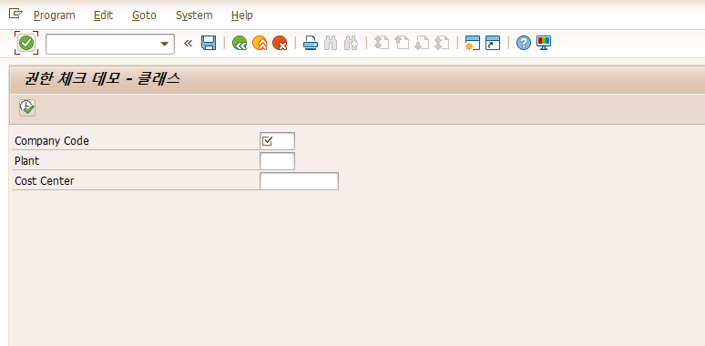
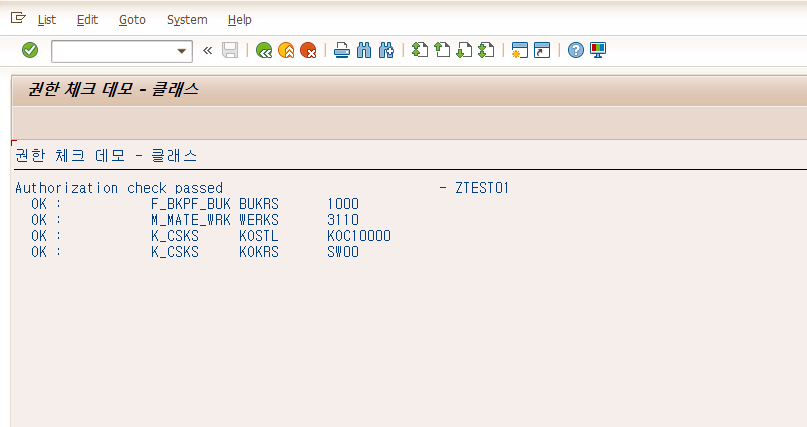
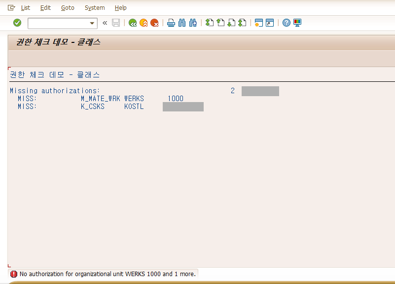
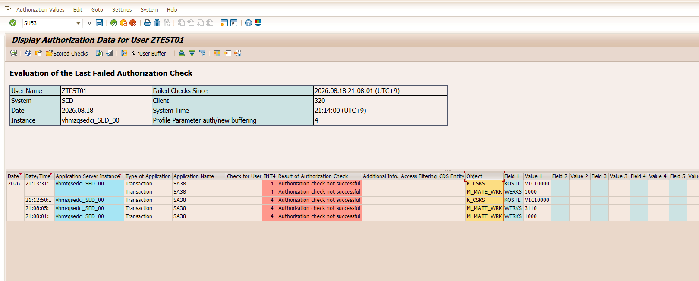
PERFORM build_check.
zcmcl_auth_check=>check( EXPORTING it_check = gt_check
IMPORTING es_return = gs_return ).
IF gs_return-type = 'E'.
MESSAGE gs_return-message TYPE 'E'. " 진입 차단
ENDIF.
" 이하 본 처리 - 권한 통과자만 도달| 입력 | 내부(SIGN/OPTION/LOW/HIGH) | 값 추출 가능? |
|---|---|---|
| 단일값 1000 | I EQ 1000 | 가능 |
| 범위 1000~2000 | I BT 1000 2000 | 불가. 사이에 존재하는 값을 알 수 없다 |
| 패턴 2* | I CP 2* | 불가 |
| 제외 / 비움 | E EQ ... / 빈 테이블 | 불가 |
따라서 조회를 먼저 수행해 실존하는 값을 확보한 뒤 그 값들을 검사한다. 사용자가 조건을 어떻게 조합하더라도(BT, CP, E) 검사 대상은 실존 값으로 한정된다.
조회로 실존 값을 확보한 뒤 체크 요청을 구성해 검사한다. 결과가 S일 때만 결과를 표시한다.
*&--------------------------------------------------------------------*
*& Module : CM
*& Program ID : YCM_AUTH_DEMO6
*& Title : CBO Authorization Check - Range Input Reference
*& Author : (작성자)
*& Create Date : (작성일)
*&--------------------------------------------------------------------*
*& MODIFICATION LOG
*&--------------------------------------------------------------------*
*& No. Date. Author. Description.
*&--------------------------------------------------------------------*
*& 001 (일자) (ID) Initial Coding
*&--------------------------------------------------------------------*
REPORT ycm_auth_demo6.
INCLUDE ycm_auth_demo6_top.
INCLUDE ycm_auth_demo6_scr.
INCLUDE ycm_auth_demo6_f01.
START-OF-SELECTION.
PERFORM get_data.
PERFORM build_check.
PERFORM check_authority.
IF gs_return-type = 'S'.
PERFORM display_result.
ENDIF.축별 조회 결과를 담을 타입과 변수를 선언한다. SELECT-OPTIONS의 참조 변수(gv_*)도 여기서 선언한다.
*&---------------------------------------------------------------------*
*& Include YCM_AUTH_DEMO6_TOP - 전역 선언
*&---------------------------------------------------------------------*
TYPES: BEGIN OF gty_s_bukrs,
bukrs TYPE bukrs,
butxt TYPE butxt,
END OF gty_s_bukrs,
BEGIN OF gty_s_werks,
werks TYPE werks_d,
name1 TYPE name1,
END OF gty_s_werks,
BEGIN OF gty_s_kostl,
kokrs TYPE kokrs,
kostl TYPE kostl,
END OF gty_s_kostl.
DATA: gv_bukrs TYPE bukrs,
gv_werks TYPE werks_d,
gv_kostl TYPE kostl,
gt_bukrs TYPE STANDARD TABLE OF gty_s_bukrs,
gt_werks TYPE STANDARD TABLE OF gty_s_werks,
gt_kostl TYPE STANDARD TABLE OF gty_s_kostl,
gt_check TYPE zcms0070t,
gt_failed TYPE zcms0070t,
gs_return TYPE bapiret2.세 축을 범위로 입력받는다. 비워 둔 축은 조회와 검사에서 제외한다.
*&---------------------------------------------------------------------*
*& Include YCM_AUTH_DEMO6_SCR - 선택화면
*&---------------------------------------------------------------------*
" 범위 입력 - 입력한 축만 조회/검사한다
SELECT-OPTIONS: s_bukrs FOR gv_bukrs,
s_werks FOR gv_werks,
s_kostl FOR gv_kostl.조회(get_data), 실존 값 추출과 요청 구성(build_check), 검사와 차단 처리(check_authority), 결과 표시(display_result)로 구성한다.
*&---------------------------------------------------------------------*
*& Include YCM_AUTH_DEMO6_F01 - 서브루틴
*&---------------------------------------------------------------------*
FORM get_data.
" 입력한 축만 조회 - 빈 select-option 축은 검사 대상에서 제외
" (판정은 s_bukrs[] - 헤더라인이 아닌 조건 테이블을 봐야 함)
IF s_bukrs[] IS NOT INITIAL.
SELECT bukrs, butxt
FROM t001
INTO TABLE @gt_bukrs
WHERE bukrs IN @s_bukrs.
ENDIF.
IF s_werks[] IS NOT INITIAL.
SELECT werks, name1
FROM t001w
INTO TABLE @gt_werks
WHERE werks IN @s_werks.
ENDIF.
IF s_kostl[] IS NOT INITIAL.
SELECT DISTINCT kokrs, kostl
FROM csks
INTO TABLE @gt_kostl
WHERE kostl IN @s_kostl.
ENDIF.
IF gt_bukrs IS INITIAL AND gt_werks IS INITIAL AND gt_kostl IS INITIAL.
MESSAGE s033(zcmm01) DISPLAY LIKE 'E'.
LEAVE LIST-PROCESSING.
ENDIF.
ENDFORM.
FORM build_check.
" 조회 결과에서 축별 distinct 값 추출 - 조건이 아니라 실존 값만 검사
DATA: lt_bukrs TYPE SORTED TABLE OF bukrs WITH UNIQUE KEY table_line,
lt_werks TYPE SORTED TABLE OF werks_d WITH UNIQUE KEY table_line,
lt_kostl TYPE SORTED TABLE OF kostl WITH UNIQUE KEY table_line,
lt_kokrs TYPE SORTED TABLE OF kokrs WITH UNIQUE KEY table_line.
LOOP AT gt_bukrs ASSIGNING FIELD-SYMBOL(<ls_bukrs>).
INSERT <ls_bukrs>-bukrs INTO TABLE lt_bukrs.
ENDLOOP.
LOOP AT gt_werks ASSIGNING FIELD-SYMBOL(<ls_werks>).
INSERT <ls_werks>-werks INTO TABLE lt_werks.
ENDLOOP.
LOOP AT gt_kostl ASSIGNING FIELD-SYMBOL(<ls_kostl>).
INSERT <ls_kostl>-kostl INTO TABLE lt_kostl.
INSERT <ls_kostl>-kokrs INTO TABLE lt_kokrs.
ENDLOOP.
" 전 축을 한 번의 체크 요청으로 구성 (BASE 누락 주의 - 앞 축이 덮어써짐)
gt_check = VALUE #( FOR lv_b IN lt_bukrs
( xuobject = 'F_BKPF_BUK' xufield = 'BUKRS' value = CONV #( lv_b ) ) ).
gt_check = VALUE #( BASE gt_check FOR lv_w IN lt_werks
( xuobject = 'M_MATE_WRK' xufield = 'WERKS' value = CONV #( lv_w ) ) ).
gt_check = VALUE #( BASE gt_check FOR lv_k IN lt_kostl
( xuobject = 'K_CSKS' xufield = 'KOSTL' value = CONV #( lv_k ) ) ).
gt_check = VALUE #( BASE gt_check FOR lv_o IN lt_kokrs
( xuobject = 'K_CSKS' xufield = 'KOKRS' value = CONV #( lv_o ) ) ).
ENDFORM.
FORM check_authority.
" 한 번의 호출로 전 축 검사 - 하나라도 권한 없으면 전체 거부(차단형)
zcmcl_auth_check=>check( EXPORTING it_check = gt_check
IMPORTING es_return = gs_return
et_failed = gt_failed ).
IF gs_return-type = 'E'.
" 부족 전량을 목록으로 표시 (실전 차단형은 MESSAGE ... TYPE 'E' 한 줄)
" LEAVE LIST-PROCESSING 금지 - 작성한 목록이 버려지고 화면만 돌아감
WRITE: / TEXT-t06, lines( gt_failed ).
LOOP AT gt_failed INTO DATA(ls_fail).
WRITE: / ' ', TEXT-t04, ls_fail-xufield, ls_fail-value.
ENDLOOP.
MESSAGE gs_return-message TYPE 'S' DISPLAY LIKE 'E'.
ENDIF.
ENDFORM.
FORM display_result.
" 여기 도달 = 요청한 전 값에 권한 있음
WRITE: / TEXT-t11, lines( gt_bukrs ).
LOOP AT gt_bukrs INTO DATA(ls_bukrs).
WRITE: / ' ', ls_bukrs-bukrs, ls_bukrs-butxt.
ENDLOOP.
SKIP.
WRITE: / TEXT-t12, lines( gt_werks ).
LOOP AT gt_werks INTO DATA(ls_werks).
WRITE: / ' ', ls_werks-werks, ls_werks-name1.
ENDLOOP.
SKIP.
WRITE: / TEXT-t13, lines( gt_kostl ).
LOOP AT gt_kostl INTO DATA(ls_kostl).
WRITE: / ' ', ls_kostl-kokrs, ls_kostl-kostl.
ENDLOOP.
ENDFORM.차단하지 않고 권한 있는 데이터만 보여주는 리포트는 check_authority를 아래
filter_authority로 바꾼다. es_return으로 중단하는 대신 et_failed의 불허 값으로
데이터를 제거한다. 메인의 IF gs_return-type = 'S'. 분기도 제거하고
display_result를 항상 호출한다.
*&---------------------------------------------------------------------*
*& Form FILTER_AUTHORITY
*&---------------------------------------------------------------------*
FORM filter_authority.
zcmcl_auth_check=>check( EXPORTING it_check = gt_check
IMPORTING es_return = gs_return
et_failed = gt_failed ).
" 불허 값을 축별 RANGE로 분리
DATA: lr_bukrs TYPE RANGE OF bukrs,
lr_werks TYPE RANGE OF werks_d,
lr_kostl TYPE RANGE OF kostl,
lr_kokrs TYPE RANGE OF kokrs.
LOOP AT gt_failed INTO DATA(ls_fail).
CASE ls_fail-xufield.
WHEN 'BUKRS'.
APPEND VALUE #( sign = 'I' option = 'EQ' low = ls_fail-value )
TO lr_bukrs.
WHEN 'WERKS'.
APPEND VALUE #( sign = 'I' option = 'EQ' low = ls_fail-value )
TO lr_werks.
WHEN 'KOSTL'.
APPEND VALUE #( sign = 'I' option = 'EQ' low = ls_fail-value )
TO lr_kostl.
WHEN 'KOKRS'.
APPEND VALUE #( sign = 'I' option = 'EQ' low = ls_fail-value )
TO lr_kokrs.
ENDCASE.
ENDLOOP.
" 빈 RANGE로 DELETE 금지 - IN 빈 범위는 전체 매치라 전량 삭제됨
IF lr_bukrs IS NOT INITIAL.
DELETE gt_bukrs WHERE bukrs IN lr_bukrs.
ENDIF.
IF lr_werks IS NOT INITIAL.
DELETE gt_werks WHERE werks IN lr_werks.
ENDIF.
IF lr_kostl IS NOT INITIAL.
DELETE gt_kostl WHERE kostl IN lr_kostl.
ENDIF.
IF lr_kokrs IS NOT INITIAL.
DELETE gt_kostl WHERE kokrs IN lr_kokrs.
ENDIF.
" 전량 제거시 안내 후 종료
IF gt_bukrs IS INITIAL AND gt_werks IS INITIAL AND gt_kostl IS INITIAL.
MESSAGE s082(zcmm01) DISPLAY LIKE 'E'.
LEAVE LIST-PROCESSING.
ENDIF.
ENDFORM.| 차단형 | 필터링형 | |
|---|---|---|
| 부분 권한 시 | 전체 거부 ("요청 전체에 권한 필요") | 볼 수 있는 것만 표시 + 제외 안내 |
| 어울리는 프로그램 | 처리/변경성, 정확한 범위 요청형 | 전체 조회 허용 리포트 |
| 사용하는 리턴 | es_return | et_failed |
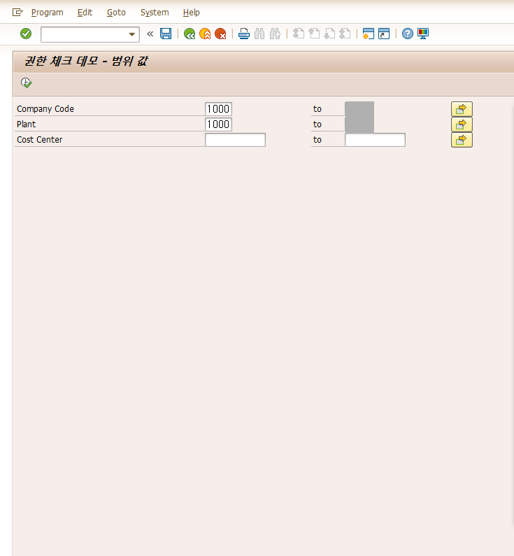
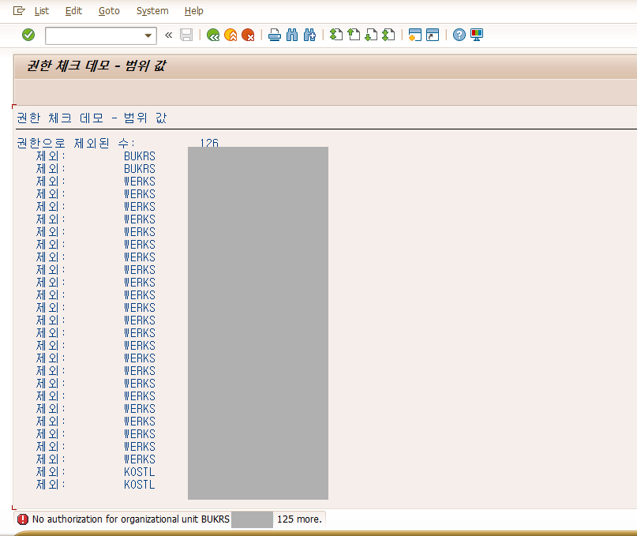
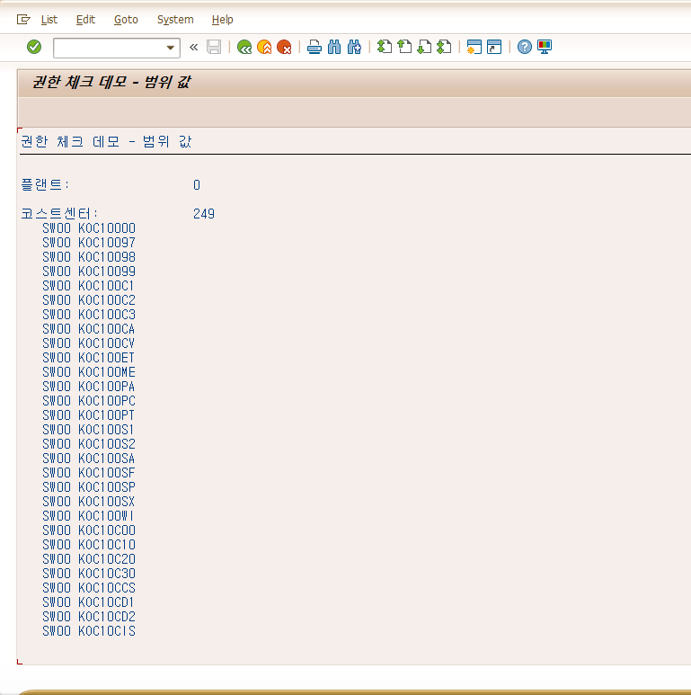
Dialog 사용자 1개. 롤 외 권한 없음.
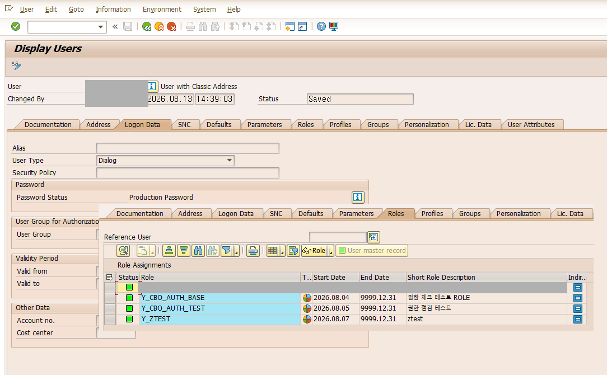
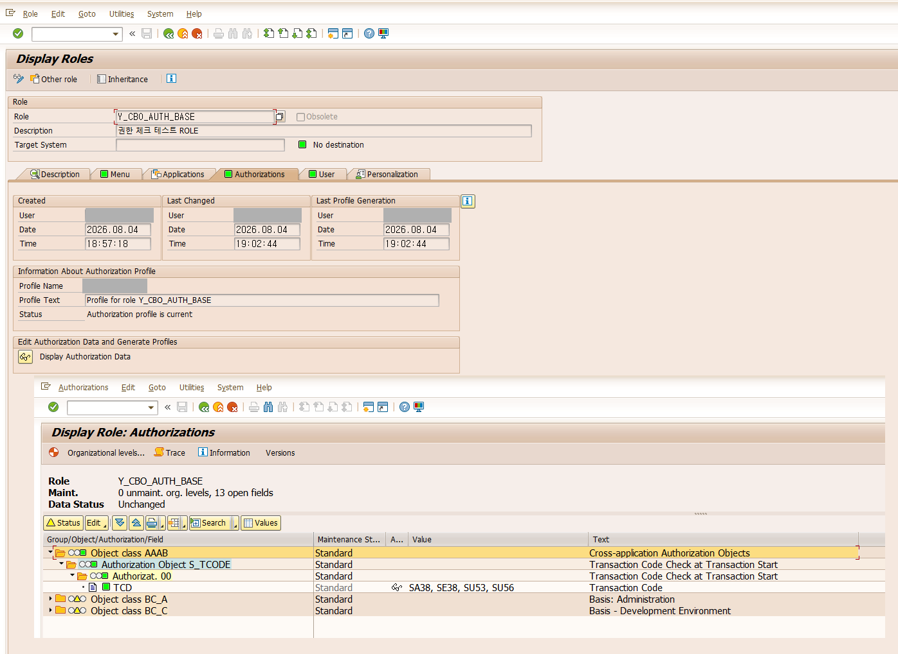
체크에 사용하는 표준 오브젝트를 수동(Manually)으로 추가하고 값은 일부만 부여한다.
*로 부여하면 차단 케이스를 재현할 수 없다.
| 오브젝트 | 부여 값 예 ("한국 담당자" 페르소나) |
|---|---|
| F_BKPF_BUK | BUKRS=1000, ACTVT=03 |
| M_MATE_WRK | WERKS=1010, ACTVT=03 |
| K_CSKS | KOKRS=1000, KOSTL=CC1*, ACTVT=03 |
ACTVT 값은 인스턴스 구성용이며 체크에 영향을 주지 않는다(원칙 5). 조직레벨($) 필드는 Organizational levels 팝업에서 입력하며 롤 전체에 공통 적용된다.
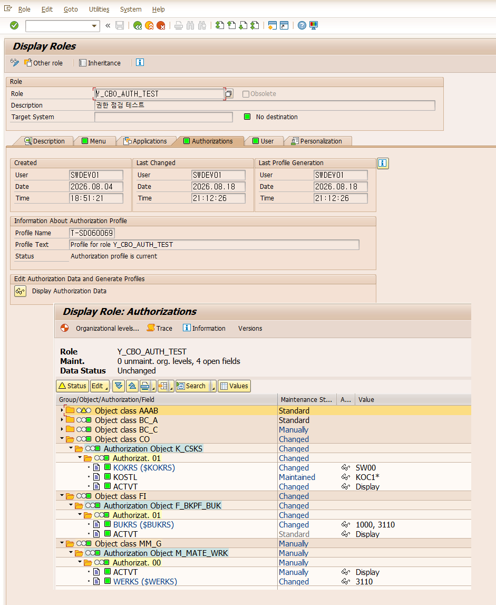
ZCMM01:080 값 원시 표기면 SE91 텍스트 미등록| # | 입력 | 기대 |
|---|---|---|
| T1 | BUKRS=허용값 | 통과 |
| T2 | BUKRS=비허용값 | 차단. 메시지 080, SU53에 해당 오브젝트 표시 |
| T3 | 3축 전부 허용값 | 통과. KOKRS 자동 포함 확인 |
| T4 | 허용+비허용 혼합 2축 | 차단. 부족 2건 목록과 081 "외 1건" 메시지 |
| T5 | 3축 전부 비허용 | 차단. 부족 3건과 "외 2건" 메시지 |
| T6 | BUKRS 비움 | 화면에서 필수 입력을 요구하므로 실행되지 않는다 |
| T7 | 타 프로그램에서 SUBMIT 값 없이 | 메시지 057로 차단. AT SELECTION-SCREEN 검증 |
| T8 | EN 로그온으로 T4 재실행 | EN 메시지 표시. 로그온 언어에 따라 자동 선택 |
| # | 입력 | 기대 |
|---|---|---|
| D1 | s_bukrs=허용값+비허용값 2건 | 차단. 부족 목록에 비허용 값 표시 |
| D2 | s_bukrs=허용값만 | 통과 |
| D3 | 허용 범위의 다른 축 조합 | 통과 |
| D4 | 비허용 패턴 (예: 타 법인 CC) | 차단. 부족 다수와 "외 N건" 메시지 |
| D5 | 전부 비움 | 메시지 033. 조회 조건이 없으므로 검사 대상도 없다 |
DELETE gt_check WHERE value IS INITIALQ. ACTVT는 왜 검사하지 않나?
체크 목적이 조직 값에 대한 접근 가능 여부이므로 값 일치만 확인한다. 활동 구분이
필요해지면 구조에 필드를 추가하는 방식으로 확장할 수 있다.
Q. 프로그램 실행 자체는 어떻게 통제하나?
PFCG의 T-code 부여(S_TCODE)로 처리한다. 본 모듈은 실행된 프로그램 내에서의 조직
범위를 담당한다.
Q. 오브젝트를 공통 모듈에서 일괄 결정할 수 없나?
같은 필드라도 업무 문맥에 따라 적합한 오브젝트가 다르다. BUKRS를 사용하는 표준
오브젝트만 수십 개이고(TOBJ), 시스템에는 대표 오브젝트를 지정하는 메타데이터가
없어 자동 결정이 불가능하다. 그래서 프로그램이 직접 지정한다. TOBJ 조회와 SU20
where-used는 후보 탐색 용도로 사용한다.
Q. 부족한 권한이 여러 개면 사용자에게 어떻게 표시되나?
"첫 건 외 N건" 형태의 메시지가 표시되고, 프로그램이 전체 목록을 함께 표시할 수도
있다. 메시지는 로그온 언어에 따라 EN 또는 KO로 표시된다.
Q. 성능에 영향은 없나?
권한 체크는 로그인 시 메모리에 로드된 버퍼를 조회한다. 건별이 아닌 distinct 값
단위로 검사하므로 데이터 건수와 무관하다.
본문에 인용한 코드의 전체 소스다. 헤더와 조직 값은 예시로 정리했다. 저장소는 auth-check/src에 있다.
| 오브젝트 | 유형 | 패키지 | 내용 |
|---|---|---|---|
| ZCMS0070 | 구조 | ZCM00 | 체크 요청 1행 (오브젝트+필드+값) |
| ZCMS0070T | 테이블 타입 | ZCM00 | 체크 요청 목록 |
| ZCMCL_AUTH_CHECK | 클래스 | ZCM00 | 공통 권한 체크 |
| YCM_AUTH_DEMO5 | 프로그램 | $TMP | 데모 1 메인 |
| YCM_AUTH_DEMO5_TOP | 인클루드 | $TMP | 전역 선언 |
| YCM_AUTH_DEMO5_SCR | 인클루드 | $TMP | 선택화면 |
| YCM_AUTH_DEMO5_F01 | 인클루드 | $TMP | 서브루틴 |
| YCM_AUTH_DEMO6 | 프로그램 | $TMP | 데모 2 메인 |
| YCM_AUTH_DEMO6_TOP | 인클루드 | $TMP | 전역 선언 |
| YCM_AUTH_DEMO6_SCR | 인클루드 | $TMP | 선택화면 |
| YCM_AUTH_DEMO6_F01 | 인클루드 | $TMP | 서브루틴 |
| TEXT_ELEMENTS.md | 텍스트 풀 | — | 텍스트 심볼, 선택화면 텍스트 |
| README.md | 안내 | — | 생성 순서, 의존 오브젝트 |